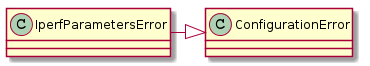
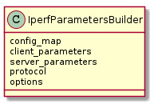

The builders for iperf parameter objects.
An exception to raise if there is an error in one of the parameters.
| IperfParametersError | An exception to raise for invalid parameters |

The builder of iperf parameters.
| IperfParametersBuilder(config_map) | A builder of IperfParameters |
